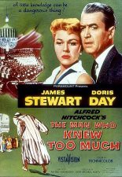

#2363 Der Hitchcock - Mann, der zuviel wußte
Alternativ: The Man Who Knew Too Much
Auszeichnungen: 1 Oscars gewonnen
 
 IMDB-Wertung: 7.5 / 10
IMDB-Wertung: 7.5 / 10  Metascore: 78
Metascore: 78 
Dr. McKenna (James Stewart) fährt mit seiner Frau Jo (Doris Day) und seinem Sohn Hank nach Marokko in den Urlaub. Doch schon bald wird das Familienidyll gestört: McKenna wird Zeuge einer Messerstecherei, bei der der Franzose Louis Bernard tödlich verletzt wird. Bernards letzte Worte werden dem hilfsbereiten Amerikaner zum Verhängnis. Die Killer fackeln nicht lange: Um McKennas Schweigen zu erzwingen, entführen sie seinen Sohn. Auf der Suche nach ihrem Kind geraten die Eltern in ein Netz von Intrigen, bei dem sie niemandem trauen können. Hinter dem Mord steckt ein internationales Komplott...
Jahr: 1956
Dauer: 120 Minuten
FSK: 12
Land: USA Studio: Paramount ReleaseTonspuren:
Untertitel: Deutsch,
Auflösung: 1080p (1920x1040) Größe: 8960 MB
Genre: Thriller
Regisseur:  Alfred Hitchcock
Alfred Hitchcock
Drehbuch: John Michael Hayes, Charles Bennett, D.B. Wyndham-Lewis, Angus MacPhail
Soundtrack: Bernard Herrmann
Darsteller:
 James Stewart als Dr. Benjamin McKenna
James Stewart als Dr. Benjamin McKenna Doris Day als Josephine Conway McKenna
Doris Day als Josephine Conway McKenna- Bernard Miles als Edward Drayton
- Daniel Gélin als Louis Bernard
- Alan Mowbray als Val Parnell
- Alix Talton als Helen Parnell
- Carolyn Jones als Cindy Fontaine
- Frank Albertson als Worker at the Taxidermist's , uncredited
 Walter Gotell als Guard , uncredited
Walter Gotell als Guard , uncredited Alfred Hitchcock als Man in Morocco Marketplace , uncredited
Alfred Hitchcock als Man in Morocco Marketplace , uncredited Allen Jaffe als Arab , uncredited
Allen Jaffe als Arab , uncredited Richard Marner als Aide to Prime Minister , uncredited
Richard Marner als Aide to Prime Minister , uncredited- Anthony Warde als French Policeman , uncredited
- Brenda de Banzie als Lucy Drayton
- Ralph Truman als Inspector Buchanan
- Mogens Wieth als Ambassador
- Hillary Brooke als Jan Peterson
- Christopher Olsen als Hank McKenna
- Reggie Nalder als Rien
- Richard Wattis als Assistant Manager
- Noel Willman als Woburn
- Yves Brainville als Police Inspector
- Patrick Aherne als Handyman , uncredited
- Frank Atkinson als Taxidermist , uncredited
- Walter Bacon als Church Member , uncredited
- Frank Baker als Royal Albert Hall Attendee , uncredited
- John Barrard als Taxidermist , uncredited
- Betty Bascomb als Edna , uncredited
 Eumenio Blanco als Arab , uncredited
Eumenio Blanco als Arab , uncredited- Alexis Bobrinskoy als Foreign Prime Minister , uncredited
- Lovyss Bradley als Church Member , uncredited
- Janet Bruce als Box Office Woman , uncredited
- Naida Buckingham als Lady in Audience , uncredited
- Clifford Buckton als Sir Kenneth Clarke , uncredited
- Barbara Burke als Assassin's Companion , uncredited
- Nora Bush als Church Member , uncredited
- Peter Camlin als Headwaiter , uncredited
- Albert Carrier als French Policeman , uncredited
- Abdelhaq Chraibi als Arab , uncredited
- Oliver Cross als Royal Albert Hall Attendee , uncredited
- Pauline Farr als Ambassador's Wife , uncredited
- Harry Fine als Edington , uncredited
- Alex Frazer als Man , uncredited
- Wolf Frees als Aide to Prime Minister , uncredited
 Milton Frome als Guard , uncredited
Milton Frome als Guard , uncredited Leo Gordon als Chauffeur , uncredited
Leo Gordon als Chauffeur , uncredited- Sam Harris als Royal Albert Hall Attendee , uncredited
- Bernard Herrmann als Conductor / Himself , uncredited
- Gladys Holland als Bernard's Date at Restaurant , uncredited
 Jimmie Horan als Royal Albert Hall Attendee , uncredited
Jimmie Horan als Royal Albert Hall Attendee , uncredited
Datei: X:\Person\Hitchcock\Hitchcock - Mann, der zuviel wußte, Der (1956, FSK12, 1920x1040).mkv seit 03.11.2015
Festplatte: HD Collection-7+mehr(A-Z)+Person
 Es gibt insgesamt 25 Filme in der Gruppe 'Person\Hitchcock'
Es gibt insgesamt 25 Filme in der Gruppe 'Person\Hitchcock'